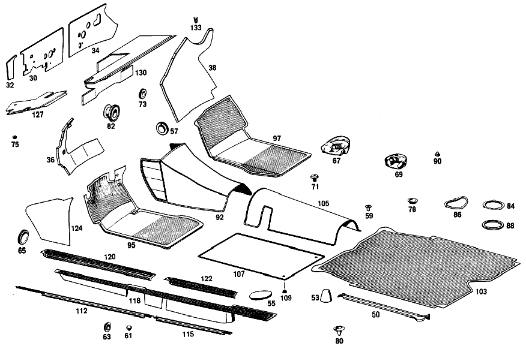

| № | Артикул | Название | Кол. | Примечание | Ограничение |
|---|---|---|---|---|---|
| 30 | A 110 682 19 20 | ИЗОЛЯЦИЯ | 1 | LEFT,3X542X277 MM для BODY FRONT END,IN ENGINE COMPARTMENT Рулевое управление: Влево | |
| 32 | A 110 682 07 20 | ИЗОЛЯЦИЯ | - | ||
| 34 | A 110 682 20 20 | ИЗОЛЯЦИЯ | 1 | RIGHT,3X320X630 MM для BODY FRONT END,IN ENGINE COMPARTMENT Рулевое управление: Влево | |
| 36 | A 110 680 09 25 | ШУМОИЗОЛЯЦИЯ | - | Рулевое управление: Влево | |
| 36 | A 000 983 22 91 | ПАПКА | 1 | для FRONT PANEL,LEFT IN LEG ROOM FRONT Рулевое управление: Влево [008] FROM CHASSIS 048977 ALSO INSTALLED ON,SEE FOOTNOTE 60 [060] 044859, 046394, 048273, 048278, 048347, 048349, 048366, 048379, 048460, 048481, 048493, 048510, 048905- 048913, 048915- 048929, 048930- 048933, 048935- 048937, 048940, 048942, 048952- 048954, 048956, 048966, 048968- 048973. [012] FROM CHASSIS 108750-130853 ALSO INSTALLED ON,SEE FOOTNOTE 61 [061] 098518, 106735, 106883, 107064, 107168, 107505, 107583, 107635, 107736, 107869, 107893, 108657, 108658, 108672, 108676, 108679, 108680, 108682- 108700, 108706- 108711, 108713- 108748. | |
| 38 | A 110 680 02 25 | ШУМОИЗОЛЯЦИЯ | 1 | для FRONT PANEL,RIGHT IN LEG ROOM,FRONT Рулевое управление: Влево [005] 111.010 UP TO CHASSIS 052077;111.012 UP TO CHASSIS 130853 | |
| 50 | A 110 683 01 24 | НАКЛАДКА | 1 | LEFT IN LUGGAGE COMPARTMENT | |
| 53 | A 110 683 03 36 | ПАНЕЛЬ | 2 | ||
| 55 | A 110 683 00 10 | Крышка | 2 | для SUBFRAME MOUNTING CUP [007] 111.010 UP TO CHASSIS 048976 EXCEPT FOR,SEE FOOTNOTE 60 [060] 044859, 046394, 048273, 048278, 048347, 048349, 048366, 048379, 048460, 048481, 048493, 048510, 048905- 048913, 048915- 048929, 048930- 048933, 048935- 048937, 048940, 048942, 048952- 048954, 048956, 048966, 048968- 048973. [010] 111.012 UP TO CHASSIS 108749 EXCEPT FOR,SEE FOOTNOTE 61 [061] 098518, 106735, 106883, 107064, 107168, 107505, 107583, 107635, 107736, 107869, 107893, 108657, 108658, 108672, 108676, 108679, 108680, 108682- 108700, 108706- 108711, 108713- 108748. | |
| 55 | A 110 683 00 10 | Крышка | 1 | для SUBFRAME MOUNTING CUP [008] FROM CHASSIS 048977 ALSO INSTALLED ON,SEE FOOTNOTE 60 [060] 044859, 046394, 048273, 048278, 048347, 048349, 048366, 048379, 048460, 048481, 048493, 048510, 048905- 048913, 048915- 048929, 048930- 048933, 048935- 048937, 048940, 048942, 048952- 048954, 048956, 048966, 048968- 048973. [011] FROM CHASSIS 108750 ALSO INSTALLED ON,SEE FOOTNOTE 61 [061] 098518, 106735, 106883, 107064, 107168, 107505, 107583, 107635, 107736, 107869, 107893, 108657, 108658, 108672, 108676, 108679, 108680, 108682- 108700, 108706- 108711, 108713- 108748. | |
| 57 | A 110 987 00 45 | КОЛПАЧОК | 1 | для OIL LEVEL CONTROL IN TRANSMISSION TUNNEL [015] 111.010 UP TO CHASSIS 052832;111.012 UP TO CHASSIS 117420 | |
| 59 | A 000 997 65 81 | КАБ. ВТУЛКА | 2 | для REAR SEAT BENCH CUSHION MOUNTING TO PLUG WATER DRAIN HOLES IN FLOOR | |
| 61 | A 110 987 00 39 | Пробка | - | 10mm | |
| 61 | A 000 997 33 20 | Запорная крышка | 12 | BELOW FRONT AND REAR SEATS TO PLUG WATER DRAIN HOLES IN FLOOR; 10 MM | |
| 63 | A 113 987 00 44 | Диск | 4 | BELOW REAR SEAT BENCH,ON THE LEFT AND ON THE RIGHT TO PLUG WATER DRAIN HOLES IN FLOOR; 20.5 MM | |
| 65 | A 110 987 07 44 | Запорная шайба | 2 | для BLINKER LAMP CABLE PASSAGE IN FRONT PANEL PILLAR; 34 MM | |
| 67 | A 110 899 04 08 | ПАНЕЛЬ | - | ||
| 69 | A 110 899 03 08 | ПАНЕЛЬ | - | ||
| 71 | A 000 990 13 22 | болт | 2 | с 7/16" THREAD [017] FROM CHASSIS 061611 EXCEPT FOR 061667-061669 ALSO INSTALLED ON,SEE FOOTNOTE 62 [062] 061595, 061597, 061598, 061601, 061603- 061609. [019] 111.012 FROM CHASSIS 137514 EXCEPT FOR,SEE FOOTNOTE 63 ALSO INSTALLED ON,SEE FOOTNOTE 64 [063] 137521, 137525, 137529, 137532, 137572, 137585, 137734, 137735, 137737- 137744. [064] 137474, 137490, 137494, 137496, 137498, 137501, 137503, 137506, 137508, 137512. | |
| 73 | A 000 987 02 44 | Запорная шайба | - | ||
| 73 | A 110 987 08 44 | Диск | 1 | для HOLE IN FRONT PANEL,RIGHT; 18.5 MM | |
| 75 | A 111 987 12 15 | ЗАГЛУШКА | - | ||
| 75 | A 000 987 18 40 | Резиновый буфер | 12 | для WATER DRAIN HOLES IN COWL,IN WATER TANK & IN LUGGAGE COMPARTMENT FLOOR | |
| 78 | A 110 987 06 44 | Запорная шайба | 2 | [023] 111.010 FROM CHASSIS 057869;111.012 FROM CHASSIS 126723 | |
| 78 | A 110 987 06 44 | Запорная шайба | 2 | для HOLE IN SIDE MEMBER,REAR [023] 111.010 FROM CHASSIS 057869;111.012 FROM CHASSIS 126723 | |
| 80 | A 111 997 12 81 | втулка | 2 | для WATER DRAIN IN SPARE WHEEL RECESS BOTTOM PLATE | |
| 82 | A 110 997 12 81 | резиновая втулка | - | Рулевое управление: Вправо [415] ПРИМЕЧ. ПО ЗАМЕНЕ ПРИМЕНИМО ТОЛЬКО ДЛЯ СТОЯЩИХ РЯДОМ ПОЗИЦИЙ | |
| 84 | A 110 683 01 10 | КРЫШКА | - | ||
| 84 | A 123 683 00 10 | Крышка | 2 | для IMMERSION\-PAINT HOLE IN LUGGAGE COMPARTMENT FLOOR | |
| 86 | A 110 683 02 10 | КРЫШКА | - | ||
| 86 | A 123 683 00 10 | Крышка | 2 | для IMMERSION\-PAINT HOLE IN REAR COMPARTMENT FLOOR | |
| 88 | A 110 683 01 98 | УПЛОТНИТЕЛЬ | - | ||
| 88 | A 003 989 54 85 | Уплотнительная лента | 4 | 10X12X465 MM COVER TO REAR COMPARTMENT FLOOR AND LUGGAGE COMPARTMENT FLOOR [024] 111.010 UP TO CHASSIS 062637;111.012 UP TO CHASSIS 140851 | |
| 90 | A 000 987 92 40 | Резиновый буфер | 2 | для HOLE IN REAR LID BESIDE HINGE | |
| 92 | A 111 680 03 45 | НАСТИЛ | 1 | TUNNEL,FRONT FLOOR Рулевое управление: Влево [402] БОЛЬШЕ НЕ ПОСТАВЛЯЕТСЯ [013] WHEN ORDERING, STATE COL0R AND CHASSIS NO. | |
| 95 | A 110 684 17 02 | НАСТИЛ | - | Рулевое управление: Влево | |
| 95 | A 108 684 01 02 | НАСТИЛ | 1 | для FRONT COMPARTMENT FLOOR,LEFT Рулевое управление: Влево [006] 111.010 FROM CHASSIS 052078;111.012 FROM CHASSIS 130854 | |
| 97 | A 110 684 18 02 | НАСТИЛ | - | Рулевое управление: Влево | |
| 97 | A 108 684 02 02 | НАСТИЛ | 1 | для FRONT COMPARTMENT FLOOR,RIGHT Рулевое управление: Влево [006] 111.010 FROM CHASSIS 052078;111.012 FROM CHASSIS 130854 | |
| 103 | A 110 684 01 05 | НАСТИЛ | - | ||
| 103 | A 108 684 01 05 | НАСТИЛ | 1 | для LUGGAGE COMPARTMENT FLOOR | |
| 105 | A 111 680 05 45 | НАСТИЛ | 1 | для TUNNEL,REAR COMPARTMENT FLOOR [402] БОЛЬШЕ НЕ ПОСТАВЛЯЕТСЯ [013] WHEN ORDERING, STATE COL0R AND CHASSIS NO. [030] 111.010 UP TO CHASSIS 044445 ALSO INSTALLED ON,SEE FOOTNOTE 65 [065] 044388, 044394, 044399, 044402- 044404, 044407- 044412, 044414- 044423, 044426- 044434, 044436- 044443. | |
| 107 | A 111 680 01 41 | НАСТИЛ | 2 | LEFT AND RIGHT для REAR COMPARTMENT FLOOR [402] БОЛЬШЕ НЕ ПОСТАВЛЯЕТСЯ [013] WHEN ORDERING, STATE COL0R AND CHASSIS NO. | |
| 109 | A 136 988 09 81 | Кнопка-застежка | - | ||
| 109 | A 000 988 84 81 | Кнопка-застежка | 4 | RUGS TO REAR COMPARTMENT FLOOR | |
| 112 | A 110 686 05 36 | ПЛАНКА | - | ||
| 112 | A 110 686 09 36 | ПЛАНКА | 1 | LEFT BELOW FRONT DOORS | |
| 115 | A 110 686 07 36 | ПЛАНКА | - | ||
| 115 | A 110 686 09 36 | ПЛАНКА | 1 | LEFT BELOW REAR DOORS | |
| 118 | A 110 686 17 80 | НАСТИЛ | - | ||
| 118 | A 108 686 09 80 | НАСТИЛ | 1 | для ENTRANCE,LEFT INSIDE | |
| 120 | A 110 686 13 80 | НАСТИЛ | - | ||
| 120 | A 110 686 23 80 | НАСТИЛ | 1 | для ENTRANCE,FRONT LEFT BELOW FRONT DOORS | |
| 122 | A 110 686 15 80 | НАСТИЛ | - | ||
| 122 | A 110 686 25 80 | НАСТИЛ | 1 | для ENTRANCE,REAR LEFT BELOW REAR DOORS | |
| 124 | A 110 688 03 06 | Обшивка | 1 | для FRONT PANEL,LATERAL BOTTOM LEFT | |
| 127 | A 112 680 07 17 | ПАНЕЛЬ | 1 | BELOW INSTRUMENT PANEL, LEFT Рулевое управление: Влево [006] 111.010 FROM CHASSIS 052078;111.012 FROM CHASSIS 130854 | |
| 130 | A 110 680 26 17 | ПАНЕЛЬ | 1 | BELOW INSTRUMENT PANEL, RIGHT Рулевое управление: Влево | |
| 133 | A 000 988 23 78 | Скоба | 2 | COVERING BELOW INSTRUMENT PANEL TO CONNECTION DUCT | |
| 135 | A 110 689 03 91 | ВЕЩЕВОЙ ЯЩИК | 1 | Рулевое управление: Влево [034] 010 FROM CHASSIS 061675;012 FROM CHASSIS 137770 | |
| 137 | A 000 994 25 45 | Пружинная гайка самореза | 8 | GLOVE COMPARTMENT AND ASH\-TRAY HOUSING TO INSTRUMENT PANEL; 3.3MM [035] 010 UP TO CHASSIS 017603 EXCEPT FOR,SEE FOOTNOTE 58;012 UP TO CHASSIS 036825 EXCEPT FOR,SEE FOOTNOTE 59 | |
| 137 | A 000 994 25 45 | Пружинная гайка самореза | 5 | GLOVE COMPARTMENT AND ASH\-TRAY HOUSING TO INSTRUMENT PANEL; 3.3MM [036] 010 FROM CHASSIS 017604 ALSO INSTALLED ON,SEE FOOTNOTE 58;012 FROM CHASSIS 036826 ALSO INSTALLED ON,SEE FOOTNOTE 59 | |
| 140 | A 112 689 01 83 | КРЫШКА | 1 | Рулевое управление: Влево [036] 010 FROM CHASSIS 017604 ALSO INSTALLED ON,SEE FOOTNOTE 58;012 FROM CHASSIS 036826 ALSO INSTALLED ON,SEE FOOTNOTE 59 | |
| 145 | A 110 689 01 70 | РУЧКА | 1 | для GLOVE COMPARTMENT LID Рулевое управление: Влево | |
| 147 | A 111 987 08 40 | РЕЗИНОВЫЙ УПОР | 1 | КРЫШКА ВЕЩЕВОГО ЯЩИКА НА ПРИБОРНОЙ ПАНЕЛИ | |
| 149 | A 110 689 00 01 | Замок | 1 | SAME LOCK AS OF REAR LID [407] ПРИ ЗАКАЗЕ УКАЗАТЬ НОМЕР КОМПЛЕКТА ЗАМКОВ | |
| 151 | A 000 766 10 06 | - Ключ | 2 | с THE LETTER "K" [402] БОЛЬШЕ НЕ ПОСТАВЛЯЕТСЯ | |
| 153 | A 000 987 97 40 | Резиновый буфер | 1 | для GLOVE COMPARTMENT LID [036] 010 FROM CHASSIS 017604 ALSO INSTALLED ON,SEE FOOTNOTE 58;012 FROM CHASSIS 036826 ALSO INSTALLED ON,SEE FOOTNOTE 59 | |
| 155 | A 111 680 05 51 | ШАРНИР | 2 | для GLOVE COMPARTMENT LID [036] 010 FROM CHASSIS 017604 ALSO INSTALLED ON,SEE FOOTNOTE 58;012 FROM CHASSIS 036826 ALSO INSTALLED ON,SEE FOOTNOTE 59 | |
| 158 | A 111 689 00 32 | СКОБА | 1 | КРЫШКА ВЕЩЕВОГО ЯЩИКА НА ПРИБОРНОЙ ПАНЕЛИ | |
| 160 | A 110 993 09 01 | пружина | 1 | КРЫШКА ВЕЩЕВОГО ЯЩИКА НА ПРИБОРНОЙ ПАНЕЛИ | |
| 162 | A 111 680 11 06 | Обшивка | 1 | СВЕРХУ И СНИЗУ Рулевое управление: Влево [013] WHEN ORDERING, STATE COL0R AND CHASSIS NO. | |
| 168 | A 115 680 35 39 | НАКЛАДКА | 1 | для LOUDSPEAKER OPENING [036] 010 FROM CHASSIS 017604 ALSO INSTALLED ON,SEE FOOTNOTE 58;012 FROM CHASSIS 036826 ALSO INSTALLED ON,SEE FOOTNOTE 59 | |
| 170 | A 110 993 03 10 | ПРУЖИНА | 2 | CAP TO INSTRUMENT CLUSTER [045] 010 FROM CHASSIS 002860-017603 EXCEPT FOR,SEE FOOTNOTE 58;012 FROM CHASSIS 005974-036825 EXCEPT FOR,SEE FOOTNOTE 59 | |
| 172 | A 110 689 01 72 | МОЛДИНГ | - | Рулевое управление: Влево | |
| 172 | A 110 689 07 72 | МОЛДИНГ | 1 | TOP LEFT для INSTRUMENT PANEL,ABOVE HEATER NOZZLE Рулевое управление: Влево | |
| 174 | A 110 689 02 72 | МОЛДИНГ | 1 | TOP RIGHT ABOVE HEATER NOZZLE Рулевое управление: Влево | |
| 176 | A 110 689 00 72 | МОЛДИНГ | 1 | TOP CENTER для INSTRUMENT PANEL,ABOVE HEATING CONTROL Рулевое управление: Влево | |
| 178 | A 000 990 07 50 | ГАЙКА | 7 | UPPER GARNISH MOULDING TO INSTRUMENT PANEL | |
| 180 | A 110 680 11 71 | МОЛДИНГ | - | BOTTOM для INSTRUMENT PANEL Рулевое управление: Влево | |
| 180 | A 110 689 10 71 | МОЛДИНГ | 1 | BOTTOM для INSTRUMENT PANEL Рулевое управление: Вправо | |
| 184 | A 111 680 05 96 | КРЫШКА | - | ||
| 188 | A 180 817 02 14 | ОБОЗНАЧЕНИЕ МОДЕЛИ | 1 | ПЕРЕДНЯЯ ПАНЕЛЬ 220 S | |
| 190 | A 110 689 01 80 | Декоративная розетка | 1 | для STEERING LOCK OPENING [051] 010 FROM CHASSIS 024215;012 FROM CHASSIS 051200 | |
| 192 | A 110 689 00 98 | Резиновое кольцо | 1 | для STEERING LOCK OPENING ESCUTCHEON [051] 010 FROM CHASSIS 024215;012 FROM CHASSIS 051200 | |
| 200 | A 111 680 01 87 | ПЕРЕДНЯЯ ПАНЕЛЬ | 1 | ДВУХЧАСТН. Рулевое управление: Влево [040] 010 FROM CHASSIS 013119;012 FROM CHASSIS 026643 | |
| 204 | A 111 680 33 83 | Обшивка | 1 | AT INSTRUMENT PANEL,BELOW GLOVE COMPARTMENT LID Рулевое управление: Влево [040] 010 FROM CHASSIS 013119;012 FROM CHASSIS 026643 | |
| 206 | A 110 680 00 17 | ПАНЕЛЬ | - | ||
| A 000 983 30 91 | ПАПКА | NB | BITUMEN FELT CARDBOARD, 5 MM THICK [404] ЗАКАЗЫВАТЬ ПОГОННЫМИ МЕТРАМИ | ||
| A 000 983 30 91 | ПАПКА | 1 | для FRONT COMPARTMENT FLOOR,LEFT,547X560 MM | ||
| A 000 983 30 91 | ПАПКА | 1 | для FRONT COMPARTMENT FLOOR,RIGHT,540X555 MM | ||
| A 000 983 30 91 | ПАПКА | 1 | для TUNNEL,FRONT 702X740 MM Коробка передач | ||
| A 000 983 30 91 | ПАПКА | 1 | для TUNNEL,FRONT 742X745 MM Автоматическая коробка переключения передач [056] NOT FOR USE WITH MERCEDES-BENZ HYDRAULIC-AUTOMATIC CLUTCH | ||
| A 000 983 30 91 | ПАПКА | 1 | для TUNNEL BETWEEN HEATING DUCT,137X192 MM [001] 111.010 UP TO CHASSIS 029566;111.012 UP TO CHASSIS 062698 | ||
| A 000 983 30 91 | ПАПКА | 1 | для FRONT PANEL 129X224 MM Рулевое управление: Влево | ||
| A 000 983 30 91 | ПАПКА | 1 | для FRONT PANEL 730X737 MM Рулевое управление: Влево | ||
| A 000 983 30 91 | ПАПКА | 1 | для FRONT PANEL 700X743 MM Рулевое управление: Вправо | ||
| A 000 983 30 91 | ПАПКА | 1 | для FRONT PANEL,BOTTOM LEFT,493X510 MM Рулевое управление: Влево | ||
| A 000 983 30 91 | ПАПКА | 1 | для FRONT PANEL,BOTTOM RIGHT,562X640 MM Рулевое управление: Вправо | ||
| A 000 983 30 91 | ПАПКА | 1 | для FRONT PANEL,TOP LEFT,370X496 MM Рулевое управление: Влево | ||
| A 000 983 30 91 | ПАПКА | 1 | для FRONT PANEL,TOP RIGHT,395X571 MM Рулевое управление: Вправо | ||
| A 000 983 30 91 | ПАПКА | 1 | для WATER TANK 110X294 MM | ||
| A 000 983 30 91 | ПАПКА | 2 | для WATER TANK 205X703 MM | ||
| A 110 682 05 13 | ШУМОИЗОЛЯЦИЯ | - | |||
| A 110 682 19 13 | ШУМОИЗОЛЯЦИЯ | NB | MOLTOPRENE,20 MM THICK [402] БОЛЬШЕ НЕ ПОСТАВЛЯЕТСЯ | ||
| A 110 682 19 13 | ШУМОИЗОЛЯЦИЯ | 1 | MOLTOPRENE,20 MM THICK [402] БОЛЬШЕ НЕ ПОСТАВЛЯЕТСЯ | ||
| A 110 682 06 13 | ШУМОИЗОЛЯЦИЯ | - | |||
| A 110 682 20 13 | ШУМОИЗОЛЯЦИЯ | NB | MOLTOPRENE,20 MM THICK для TUNNEL,FRONT RIGHT TOP,279X610 MM [402] БОЛЬШЕ НЕ ПОСТАВЛЯЕТСЯ | ||
| A 110 682 08 13 | ШУМОИЗОЛЯЦИЯ | - | |||
| A 110 682 13 13 | ШУМОИЗОЛЯЦИЯ | NB | MOLTOPRENE,40 MM THICK | ||
| A 110 682 13 13 | ШУМОИЗОЛЯЦИЯ | 1 | MOLTOPRENE,40 MM THICK | ||
| A 110 682 07 13 | ШУМОИЗОЛЯЦИЯ | - | |||
| A 110 682 18 13 | ШУМОИЗОЛЯЦИЯ | - | |||
| A 108 682 11 13 | ШУМОИЗОЛЯЦИЯ | NB | MOLTOPRENE,25 MM THICK | ||
| A 108 682 11 13 | ШУМОИЗОЛЯЦИЯ | 1 | MOLTOPRENE,25 MM THICK | ||
| A 000 983 30 92 | ГРИБОК | NB | FELT,BLACK,2 MM THICK BETWEEN TUNNEL AND COUPLING,100X130 MM [402] БОЛЬШЕ НЕ ПОСТАВЛЯЕТСЯ [403] НЕ УСТАНОВЛЕНО | ||
| A 000 983 29 91 | ПАПКА | NB | BITUMINIZED FELT BOARD,3 MM THICK [404] ЗАКАЗЫВАТЬ ПОГОННЫМИ МЕТРАМИ | ||
| A 000 983 29 91 | ПАПКА | 2 | для FRONT PANEL,LATERAL,BOTTOM LEFT AND RIGHT,425X520 MM | ||
| A 000 983 29 91 | ПАПКА | 2 | для REAR COMPARTMENT FLOOR,BOTTOM,560X740 MM | ||
| A 000 983 29 91 | ПАПКА | 2 | ПОД ЗАДНИМ СИДЕНЬЕМ 635X665 MM | ||
| A 000 983 29 91 | ПАПКА | 1 | для CENTRAL TUNNEL,BOTTOM,490X750 MM | ||
| A 000 983 29 91 | ПАПКА | 2 | для LUGGAGE COMPARTMENT FLOOR BEADS 85X640 MM | ||
| A 000 983 29 91 | ПАПКА | 1 | для LUGGAGE COMPARTMENT FLOOR,192X595 MM | ||
| A 000 983 29 91 | ПАПКА | 2 | для REAR PANEL,LEFT AND RIGHT,483X713 MM | ||
| A 000 983 29 91 | ПАПКА | 2 | для REAR PILLARS,302X700 MM [004] 111.010 FROM CHASSIS 050189;111.012 FROM CHASSIS 111301 | ||
| A 000 983 29 91 | ПАПКА | - | |||
| A 000 983 36 91 | ПАПКА | 2 | LATERAL ROOF RAIL,160X670 MM [004] 111.010 FROM CHASSIS 050189;111.012 FROM CHASSIS 111301 | ||
| A 000 983 36 91 | ПАПКА | 1 | REAR ROOF RAIL,170X1070 MM [004] 111.010 FROM CHASSIS 050189;111.012 FROM CHASSIS 111301 | ||
| A 000 983 21 92 | ГРИБОК | NB | WAFFLE FACED FELT,NATURAL BROWN,6 MM THICK [404] ЗАКАЗЫВАТЬ ПОГОННЫМИ МЕТРАМИ | ||
| A 000 983 21 92 | ГРИБОК | 2 | для REAR COMPARTMENT FLOOR,TOP,545X735 MM | ||
| A 000 983 21 92 | ГРИБОК | 1 | для CENTRAL TUNNEL,REAR,REAR PART 171X408 MM | ||
| A 000 983 21 92 | ГРИБОК | 1 | для CENTRAL TUNNEL,REAR,FRONT PART 160X571 MM | ||
| A 000 983 22 92 | ГРИБОК | NB | WAFFLE FACED FELT,NATURAL BROWN,10 MM THICK [404] ЗАКАЗЫВАТЬ ПОГОННЫМИ МЕТРАМИ | ||
| A 000 983 22 92 | ГРИБОК | 2 | для FRONT COMPARTMENT FLOOR,LEFT AND RIGHT TOP,550X560 MM Рулевое управление: Влево [005] 111.010 UP TO CHASSIS 052077;111.012 UP TO CHASSIS 130853 | ||
| A 000 983 22 92 | ГРИБОК | 2 | WAFFLE FACED FELT,NATURAL BROWN,10 MM THICK Рулевое управление: Вправо | ||
| A 000 983 00 98 | ПОРОЛОН | - | |||
| A 000 983 35 98 | ПОРОЛОН | - | MOLTOPRENE,5 MM THICK [404] ЗАКАЗЫВАТЬ ПОГОННЫМИ МЕТРАМИ | ||
| A 000 983 35 98 | ПОРОЛОН | 2 | для REAR PILLARS,340X700 MM | ||
| A 000 983 35 98 | ПОРОЛОН | 1 | для REAR WINDOW,BOTTOM,84X1800 MM | ||
| A 000 983 35 98 | ПОРОЛОН | 1 | ROOF REAR RAIL 187X984 MM [004] 111.010 FROM CHASSIS 050189;111.012 FROM CHASSIS 111301 | ||
| A 000 983 35 98 | ПОРОЛОН | 1 | ROOF REAR RAIL 100X1000 MM | ||
| A 000 983 35 98 | ПОРОЛОН | 2 | LATERAL ROOF RAIL 173X670 MM [004] 111.010 FROM CHASSIS 050189;111.012 FROM CHASSIS 111301 | ||
| A 000 983 43 92 | ГРИБОК | - | |||
| A 000 983 41 92 | ГРИБОК | - | |||
| A 000 983 01 98 | ПОРОЛОН | - | |||
| A 000 983 35 98 | ПОРОЛОН | NB | JUTE FELT,8 MM THICK [404] ЗАКАЗЫВАТЬ ПОГОННЫМИ МЕТРАМИ | ||
| A 000 983 35 98 | ПОРОЛОН | 3 | для 1ST,3RD AND 4TH BOWS FROM THE FRONT,70X1120 MM | ||
| A 000 983 35 98 | ПОРОЛОН | 2 | для 2ND AND 5TH BOWS FROM THE FRONT,70X1160 MM | ||
| A 000 983 33 91 | ПАПКА | - | Рулевое управление: Влево | ||
| A 110 682 00 20 | ИЗОЛЯЦИЯ | - | Рулевое управление: Влево | ||
| A 110 682 03 20 | ИЗОЛЯЦИЯ | - | Рулевое управление: Вправо | ||
| A 110 682 16 20 | ИЗОЛЯЦИЯ | - | Рулевое управление: Вправо | ||
| A 112 680 09 25 | ШУМОИЗОЛЯЦИЯ | - | Рулевое управление: Вправо | ||
| A 000 983 22 91 | ПАПКА | 1 | LEFT,3X563X313 MM для BODY FRONT END,IN ENGINE COMPARTMENT Рулевое управление: Вправо [404] ЗАКАЗЫВАТЬ ПОГОННЫМИ МЕТРАМИ | ||
| A 110 682 01 20 | ИЗОЛЯЦИЯ | - | |||
| A 110 682 23 20 | ИЗОЛЯЦИЯ | - | |||
| A 115 682 02 04 | ШУМОИЗОЛЯЦИЯ | 1 | LEFT OUTSIDE,3X125X175 MM для BODY FRONT END,IN ENGINE COMPARTMENT | ||
| A 110 682 02 20 | ИЗОЛЯЦИЯ | - | Рулевое управление: Влево | ||
| A 110 682 08 20 | ИЗОЛЯЦИЯ | - | Рулевое управление: Влево | ||
| A 110 682 04 20 | ИЗОЛЯЦИЯ | - | Рулевое управление: Вправо | ||
| A 110 682 18 20 | ИЗОЛЯЦИЯ | - | Рулевое управление: Вправо | ||
| A 112 680 10 25 | ШУМОИЗОЛЯЦИЯ | - | Рулевое управление: Вправо | ||
| A 000 983 22 91 | ПАПКА | 1 | RIGHT,3X551X286 MM для BODY FRONT END,IN ENGINE COMPARTMENT Рулевое управление: Вправо [404] ЗАКАЗЫВАТЬ ПОГОННЫМИ МЕТРАМИ | ||
| A 110 680 01 25 | ШУМОИЗОЛЯЦИЯ | - | Рулевое управление: Влево | ||
| A 000 983 22 91 | ПАПКА | 1 | для FRONT PANEL,LEFT IN LEG ROOM FRONT Рулевое управление: Влево [007] 111.010 UP TO CHASSIS 048976 EXCEPT FOR,SEE FOOTNOTE 60 [060] 044859, 046394, 048273, 048278, 048347, 048349, 048366, 048379, 048460, 048481, 048493, 048510, 048905- 048913, 048915- 048929, 048930- 048933, 048935- 048937, 048940, 048942, 048952- 048954, 048956, 048966, 048968- 048973. [010] 111.012 UP TO CHASSIS 108749 EXCEPT FOR,SEE FOOTNOTE 61 [061] 098518, 106735, 106883, 107064, 107168, 107505, 107583, 107635, 107736, 107869, 107893, 108657, 108658, 108672, 108676, 108679, 108680, 108682- 108700, 108706- 108711, 108713- 108748. | ||
| A 110 680 03 25 | ШУМОИЗОЛЯЦИЯ | - | Рулевое управление: Вправо | ||
| A 000 983 22 91 | ПАПКА | 1 | для FRONT PANEL,LEFT IN LEG ROOM FRONT Рулевое управление: Вправо | ||
| A 110 680 06 25 | ШУМОИЗОЛЯЦИЯ | 1 | для FRONT PANEL,LEFT IN LEG ROOM FRONT Рулевое управление: Вправо [026] ON SPECIAL REQUEST,FOR RADIO INSTALLATION | ||
| A 110 680 07 25 | ШУМОИЗОЛЯЦИЯ | 1 | для FRONT PANEL,RIGHT IN LEG ROOM,FRONT Рулевое управление: Влево [026] ON SPECIAL REQUEST,FOR RADIO INSTALLATION | ||
| A 110 680 04 25 | ШУМОИЗОЛЯЦИЯ | - | Рулевое управление: ВправоКоробка передач | ||
| A 000 983 22 91 | ПАПКА | 1 | для FRONT PANEL,RIGHT IN LEG ROOM,FRONT Рулевое управление: ВправоКоробка передач | ||
| A 110 680 08 25 | ШУМОИЗОЛЯЦИЯ | 1 | для FRONT PANEL,RIGHT IN LEG ROOM,FRONT Рулевое управление: ВправоАвтоматическая коробка переключения передач [056] NOT FOR USE WITH MERCEDES-BENZ HYDRAULIC-AUTOMATIC CLUTCH | ||
| A 110 680 00 25 | ШУМОИЗОЛЯЦИЯ | - | Рулевое управление: Влево | ||
| A 000 983 22 91 | ПАПКА | NB | BITUMINIZED FELT BOARD,2 MM THICK IN LEG ROOM,FRONT [404] ЗАКАЗЫВАТЬ ПОГОННЫМИ МЕТРАМИ | ||
| A 000 983 22 91 | ПАПКА | 1 | для FRONT PANEL,CENTER,100X800 MM IN LEG ROOM,FRONT Рулевое управление: Влево [014] 111.010 UP TO CHASSIS 037208;111.012 UP TO CHASSIS 079803 | ||
| A 000 983 01 98 | ПОРОЛОН | - | |||
| A 000 983 35 98 | ПОРОЛОН | NB | MOLTOPRENE,10 MM THICK IN LEG ROOM,FRONT [404] ЗАКАЗЫВАТЬ ПОГОННЫМИ МЕТРАМИ | ||
| A 000 983 35 98 | ПОРОЛОН | 1 | для FRONT PANEL,CENTER,1000X1000 MM IN LEG ROOM,FRONT Рулевое управление: Влево [014] 111.010 UP TO CHASSIS 037208;111.012 UP TO CHASSIS 079803 | ||
| A 110 680 05 25 | ШУМОИЗОЛЯЦИЯ | 1 | FRONT PANEL,CENTER IN LEG ROOM,FRONT Рулевое управление: Вправо [014] 111.010 UP TO CHASSIS 037208;111.012 UP TO CHASSIS 079803 | ||
| N 007982 005205 | Шуруп | 1 | INSULATION TO FRONT PANEL Рулевое управление: Влево [005] 111.010 UP TO CHASSIS 052077;111.012 UP TO CHASSIS 130853 | ||
| N 007982 005205 | Шуруп | 2 | INSULATION TO FRONT PANEL Рулевое управление: Вправо | ||
| A 000 990 17 42 | Диск | 1 | INSULATION TO FRONT PANEL Рулевое управление: Влево [005] 111.010 UP TO CHASSIS 052077;111.012 UP TO CHASSIS 130853 | ||
| A 000 990 17 42 | Диск | 2 | INSULATION TO FRONT PANEL Рулевое управление: Вправо | ||
| N 007983 004245 | Шуруп | 3 | INSULATION TO FRONT PANEL Рулевое управление: Влево [005] 111.010 UP TO CHASSIS 052077;111.012 UP TO CHASSIS 130853 | ||
| N 007983 004245 | Шуруп | 2 | INSULATION TO FRONT PANEL Рулевое управление: Вправо | ||
| N 900056 004506 | ПОТАЙНАЯ ШАЙБА | 3 | INSULATION TO FRONT PANEL Рулевое управление: Влево [005] 111.010 UP TO CHASSIS 052077;111.012 UP TO CHASSIS 130853 | ||
| N 900056 004506 | ПОТАЙНАЯ ШАЙБА | 2 | INSULATION TO FRONT PANEL Рулевое управление: Вправо | ||
| A 110 687 00 45 | КОЛПАЧОК | 1 | OVER KICK\-DOWN\-SWITCH Рулевое управление: ВправоАвтоматическая коробка переключения передач | ||
| A 110 683 03 10 | КРЫШКА | 1 | AT TUNNEL,для KICK\-DOWN LINKAGE Автоматическая коробка переключения передач [056] NOT FOR USE WITH MERCEDES-BENZ HYDRAULIC-AUTOMATIC CLUTCH [402] БОЛЬШЕ НЕ ПОСТАВЛЯЕТСЯ | ||
| A 110 683 00 98 | УПЛОТНИТЕЛЬ | - | |||
| A 110 683 02 98 | УПЛОТНИТЕЛЬ | - | Автоматическая коробка переключения передач | ||
| A 003 989 54 85 | Уплотнительная лента | 1 | AT TUNNEL,для KICK\-DOWN LINKAGE Автоматическая коробка переключения передач [056] NOT FOR USE WITH MERCEDES-BENZ HYDRAULIC-AUTOMATIC CLUTCH | ||
| A 000 994 23 45 | предохранитель | 6 | КРЫШКА НА ТУННЕЛЕ; B4.2 S=1.25\-2.0 Автоматическая коробка переключения передач [056] NOT FOR USE WITH MERCEDES-BENZ HYDRAULIC-AUTOMATIC CLUTCH | ||
| N 007981 004318 | Шуруп | 6 | КРЫШКА НА ТУННЕЛЕ; 4,2X9,5 Автоматическая коробка переключения передач [056] NOT FOR USE WITH MERCEDES-BENZ HYDRAULIC-AUTOMATIC CLUTCH | ||
| A 111 683 51 36 | ПАНЕЛЬ | 1 | FRONT для FLOOR SHIFT Коробка передач | ||
| A 111 683 53 98 | УПЛОТНИТЕЛЬ | 1 | FRONT COVER PLATE для FLOOR SHIFT Коробка передач | ||
| A 111 680 50 36 | ПАНЕЛЬ | 1 | REAR для FLOOR SHIFT Коробка передач [052] UP TO CHASSIS 069657 | ||
| A 111 680 55 36 | ПАНЕЛЬ | 1 | для FLOOR SHIFT Коробка передач [053] FROM CHASSIS 069658 | ||
| A 111 680 50 73 | УПЛОТНИТЕЛЬ | 1 | REAR COVER PLATE для FLOOR SHIFT Коробка передач | ||
| A 110 683 02 24 | НАКЛАДКА | 1 | RIGHT IN LUGGAGE COMPARTMENT | ||
| N 007983 004322 | Шуруп | 8 | LEDGE TO LUGGAGE COMPARTMENT | ||
| A 001 988 66 78 | СКОБА | 4 | LEDGE TO LUGGAGE COMPARTMENT | ||
| A 110 683 00 36 | ПАНЕЛЬ | - | |||
| A 001 988 44 78 | Скоба | 6 | COVER TO CUP [007] 111.010 UP TO CHASSIS 048976 EXCEPT FOR,SEE FOOTNOTE 60 [060] 044859, 046394, 048273, 048278, 048347, 048349, 048366, 048379, 048460, 048481, 048493, 048510, 048905- 048913, 048915- 048929, 048930- 048933, 048935- 048937, 048940, 048942, 048952- 048954, 048956, 048966, 048968- 048973. [010] 111.012 UP TO CHASSIS 108749 EXCEPT FOR,SEE FOOTNOTE 61 [061] 098518, 106735, 106883, 107064, 107168, 107505, 107583, 107635, 107736, 107869, 107893, 108657, 108658, 108672, 108676, 108679, 108680, 108682- 108700, 108706- 108711, 108713- 108748. | ||
| A 001 988 44 78 | Скоба | 3 | COVER TO CUP [008] FROM CHASSIS 048977 ALSO INSTALLED ON,SEE FOOTNOTE 60 [060] 044859, 046394, 048273, 048278, 048347, 048349, 048366, 048379, 048460, 048481, 048493, 048510, 048905- 048913, 048915- 048929, 048930- 048933, 048935- 048937, 048940, 048942, 048952- 048954, 048956, 048966, 048968- 048973. [011] FROM CHASSIS 108750 ALSO INSTALLED ON,SEE FOOTNOTE 61 [061] 098518, 106735, 106883, 107064, 107168, 107505, 107583, 107635, 107736, 107869, 107893, 108657, 108658, 108672, 108676, 108679, 108680, 108682- 108700, 108706- 108711, 108713- 108748. | ||
| A 136 984 02 52 | СТАКАН | - | |||
| A 110 683 00 28 | НАЛКАДКА СКОЛЬЗЯЩАЯ | 1 | для ACCELERATOR PEDAL Рулевое управление: Вправо [402] БОЛЬШЕ НЕ ПОСТАВЛЯЕТСЯ | ||
| A 001 987 76 25 | Защита кромок | 1 | 85 MM LONG Рулевое управление: Вправо [404] ЗАКАЗЫВАТЬ ПОГОННЫМИ МЕТРАМИ | ||
| N 007981 003237 | САМОРЕЗ | 5 | SLIDING PLATE TO BODY Рулевое управление: Вправо | ||
| A 110 683 00 08 | ПАНЕЛЬ | - | для REAR SEAT BENCH CUSHION MOUNTING TO PLUG WATER DRAIN HOLES IN FLOOR [403] НЕ УСТАНОВЛЕНО | ||
| A 110 987 01 39 | РЕЗИНОВЫЙ УПОР | - | RIGHT,BELOW FRONT SEAT TO PLUG WATER DRAIN HOLES IN FLOOR [403] НЕ УСТАНОВЛЕНО | ||
| A 110 987 00 44 | ДИСК | - | |||
| A 110 987 03 44 | ДИСК | - | |||
| A 110 987 04 44 | ДИСК | - | |||
| A 000 987 19 44 | ДИСК | - | |||
| A 111 987 00 15 | ЗАГЛУШКА | - | |||
| A 111 987 00 15 | ЗАГЛУШКА | - | |||
| A 108 899 01 08 | Крышка | 2 | для CAR JACK FRONT HOLDING DEVICE | ||
| A 108 899 00 08 | Крышка | 2 | для CAR JACK REAR HOLDING DEVICE | ||
| A 111 987 10 15 | ЗАГЛУШКА | - | |||
| A 000 990 12 22 | БОЛТ | - | |||
| A 126 990 07 22 | БОЛТ | 2 | с 10\-MM THREAD [016] 111.010 UP TO CHASSIS 061610 ALSO INSTALLED ON,061667-061669 EXCEPT FOR,SEE FOOTNOTE 62 [062] 061595, 061597, 061598, 061601, 061603- 061609. [018] 111.012 UP TO CHASSIS 137513 ALSO INSTALLED ON,SEE FOOTNOTE 63 EXCEPT FOR,SEE FOOTNOTE 64 [063] 137521, 137525, 137529, 137532, 137572, 137585, 137734, 137735, 137737- 137744. [064] 137474, 137490, 137494, 137496, 137498, 137501, 137503, 137506, 137508, 137512. | ||
| A 000 987 04 15 | Пробка | 2 | для HOLE IN CENTRAL PART,OUTSIDE [055] 010 FROM CHASSIS 064182;012 FROM CHASSIS 145307 | ||
| A 110 987 02 44 | ДИСК | 2 | для HOLE IN FRONT PANEL PILLAR,ON CARS HAVING NO SLIDING ROOF [020] 111.010 UP TO CHASSIS 011682;111.012 UP TO CHASSIS 023491 | ||
| A 110 987 05 44 | Запорная шайба | - | 32 MM | ||
| A 000 997 40 20 | Запорная крышка | 2 | 30.5 MM [021] 111.010 FROM CHASSIS 011683;111.012 FROM CHASSIS 023491 | ||
| A 000 997 40 20 | Запорная крышка | 2 | для HOLE IN REAR PILLAR,INSIDE; 30.5 MM [022] 111.010 UP TO CHASSIS 057868;111.012 UP TO CHASSIS 126722 | ||
| A 000 997 40 20 | Запорная крышка | 2 | для HOLE IN SIDE MEMBER,REAR; 30.5 MM [022] 111.010 UP TO CHASSIS 057868;111.012 UP TO CHASSIS 126722 | ||
| A 111 997 23 81 | КАБ. ВТУЛКА | - | Рулевое управление: Вправо | ||
| A 008 997 17 81 | втулка | 1 | TO LOCK FRONT\-PANEL HOLE Рулевое управление: Вправо | ||
| A 000 987 96 40 | РЕЗИНОВЫЙ УПОР | - | Рулевое управление: Вправо | ||
| A 000 987 18 40 | Резиновый буфер | 1 | для WHEELHOUSE,FRONT RIGHT Рулевое управление: Вправо | ||
| A 110 997 09 41 | УПЛОТНИТ. КОЛЬЦО | - | |||
| N 007981 004243 | Шуруп | - | |||
| N 000000 002062 | Шуруп | 12 | COVER TO REAR FLOOR AND TO LUGGAGE COMPARTMENT FLOOR [024] 111.010 UP TO CHASSIS 062637;111.012 UP TO CHASSIS 140851 | ||
| A 111 680 01 45 | НАСТИЛ | - | |||
| A 111 680 08 45 | НАСТИЛ | 1 | TUNNEL,FRONT FLOOR Рулевое управление: Вправо [402] БОЛЬШЕ НЕ ПОСТАВЛЯЕТСЯ [013] WHEN ORDERING, STATE COL0R AND CHASSIS NO. | ||
| A 111 680 10 45 | НАСТИЛ | 1 | для FLOOR SHIFT FOR TUNNEL,FRONT COMPARTMENT FLOOR Рулевое управление: ВлевоКоробка передач [402] БОЛЬШЕ НЕ ПОСТАВЛЯЕТСЯ [052] UP TO CHASSIS 069657 [013] WHEN ORDERING, STATE COL0R AND CHASSIS NO. | ||
| A 111 680 23 45 | НАСТИЛ | 1 | для FLOOR SHIFT FOR TUNNEL,FRONT COMPARTMENT FLOOR Рулевое управление: ВлевоКоробка передач [053] FROM CHASSIS 069658 | ||
| A 111 680 11 45 | НАСТИЛ | 1 | для FLOOR SHIFT FOR TUNNEL,FRONT COMPARTMENT FLOOR Рулевое управление: ВправоКоробка передач [402] БОЛЬШЕ НЕ ПОСТАВЛЯЕТСЯ [052] UP TO CHASSIS 069657 [013] WHEN ORDERING, STATE COL0R AND CHASSIS NO. | ||
| A 111 680 24 45 | НАСТИЛ | 1 | для FLOOR SHIFT FOR TUNNEL,FRONT COMPARTMENT FLOOR Рулевое управление: ВправоКоробка передач [402] БОЛЬШЕ НЕ ПОСТАВЛЯЕТСЯ [053] FROM CHASSIS 069658 | ||
| A 111 997 10 81 | - КАБ. ВТУЛКА | 1 | GEARSHIFT LEVER PASSAGE для TUNNEL,FRONT COMPARTMENT FLOOR Коробка передач | ||
| A 110 684 01 02 | НАСТИЛ | - | Рулевое управление: Влево | ||
| A 110 684 05 02 | НАСТИЛ | - | Рулевое управление: Влево | ||
| A 110 684 09 02 | НАСТИЛ | - | Рулевое управление: Влево | ||
| A 110 684 13 02 | НАСТИЛ | 1 | для FRONT COMPARTMENT FLOOR,LEFT Рулевое управление: Влево [005] 111.010 UP TO CHASSIS 052077;111.012 UP TO CHASSIS 130853 | ||
| A 110 684 02 02 | НАСТИЛ | - | Рулевое управление: Влево | ||
| A 110 684 06 02 | НАСТИЛ | - | Рулевое управление: Влево | ||
| A 110 684 10 02 | НАСТИЛ | 1 | для FRONT COMPARTMENT FLOOR,RIGHT Рулевое управление: Влево [005] 111.010 UP TO CHASSIS 052077;111.012 UP TO CHASSIS 130853 | ||
| A 110 684 03 02 | НАСТИЛ | - | Рулевое управление: Вправо | ||
| A 110 684 07 02 | НАСТИЛ | - | Рулевое управление: Вправо | ||
| A 108 684 03 02 | НАСТИЛ | 1 | для FRONT COMPARTMENT FLOOR,LEFT Рулевое управление: Вправо | ||
| A 110 684 04 02 | НАСТИЛ | - | Рулевое управление: Вправо | ||
| A 110 684 08 02 | НАСТИЛ | - | Рулевое управление: Вправо | ||
| A 110 684 16 02 | НАСТИЛ | 1 | для FRONT COMPARTMENT FLOOR,RIGHT Рулевое управление: Вправо | ||
| A 000 988 23 80 | КНОПКА | 4 | RUBBER MATS TO FRONT COMPARTMENT FLOOR Рулевое управление: Влево [005] 111.010 UP TO CHASSIS 052077;111.012 UP TO CHASSIS 130853 | ||
| A 000 988 23 80 | КНОПКА | 4 | RUBBER MATS TO FRONT COMPARTMENT FLOOR Рулевое управление: Вправо | ||
| N 007983 004245 | Шуруп | 4 | RUBBER MATS TO FRONT COMPARTMENT FLOOR Рулевое управление: Влево [005] 111.010 UP TO CHASSIS 052077;111.012 UP TO CHASSIS 130853 | ||
| N 007983 004245 | Шуруп | 4 | RUBBER MATS TO FRONT COMPARTMENT FLOOR Рулевое управление: Вправо | ||
| A 000 988 22 80 | КНОПКА | - | |||
| A 000 988 14 80 | Кнопка | 2 | RUBBER MATS TO FRONT COMPARTMENT FLOOR Рулевое управление: Влево [005] 111.010 UP TO CHASSIS 052077;111.012 UP TO CHASSIS 130853 | ||
| A 000 988 14 80 | Кнопка | 2 | RUBBER MATS TO FRONT COMPARTMENT FLOOR Рулевое управление: Вправо | ||
| N 007983 004236 | Шуруп | 2 | RUBBER MATS TO FRONT COMPARTMENT FLOOR Рулевое управление: Влево [005] 111.010 UP TO CHASSIS 052077;111.012 UP TO CHASSIS 130853 | ||
| N 007983 004236 | Шуруп | 2 | RUBBER MATS TO FRONT COMPARTMENT FLOOR Рулевое управление: Вправо | ||
| N 000125 005306 | ШАЙБА | - | [415] ПРИМЕЧ. ПО ЗАМЕНЕ ПРИМЕНИМО ТОЛЬКО ДЛЯ СТОЯЩИХ РЯДОМ ПОЗИЦИЙ | ||
| A 136 990 11 40 | ШАЙБА | - | Рулевое управление: Влево | ||
| A 126 885 00 10 | Диск | 2 | RUBBER MATS TO FRONT COMPARTMENT FLOOR Рулевое управление: Влево [005] 111.010 UP TO CHASSIS 052077;111.012 UP TO CHASSIS 130853 | ||
| A 126 885 00 10 | Диск | 2 | RUBBER MATS TO FRONT COMPARTMENT FLOOR Рулевое управление: Вправо | ||
| A 110 684 00 05 | НАСТИЛ | - | |||
| A 110 684 01 06 | НАСТИЛ | - | |||
| A 110 684 05 06 | НАСТИЛ | 1 | для RECESS IN LUGGAGE COMPARTMENT | ||
| A 111 680 00 45 | НАСТИЛ | 1 | для TUNNEL,REAR COMPARTMENT FLOOR [402] БОЛЬШЕ НЕ ПОСТАВЛЯЕТСЯ [013] WHEN ORDERING, STATE COL0R AND CHASSIS NO. [029] 111.012 UP TO CHASSIS 044444 EXCEPT FOR,SEE FOOTNOTE 65 [065] 044388, 044394, 044399, 044402- 044404, 044407- 044412, 044414- 044423, 044426- 044434, 044436- 044443. | ||
| A 111 680 02 41 | НАСТИЛ | - | |||
| N 007981 003257 | Шуруп | 4 | RUGS TO REAR COMPARTMENT FLOOR | ||
| N 009021 005100 | Шайба | - | |||
| A 111 990 10 40 | Диск | 4 | RUGS TO REAR COMPARTMENT FLOOR | ||
| A 110 686 01 36 | ПЛАНКА | - | |||
| A 110 686 02 36 | ПЛАНКА | - | |||
| A 110 686 06 36 | ПЛАНКА | - | |||
| A 110 686 10 36 | ПЛАНКА | 1 | RIGHT BELOW FRONT DOORS | ||
| N 007983 004327 | САМОРЕЗ | 14 | COVER RAILS TO ENTRANCES | ||
| A 110 686 03 36 | ПЛАНКА | - | |||
| A 110 686 04 36 | ПЛАНКА | - | |||
| A 110 686 08 36 | ПЛАНКА | - | |||
| A 110 686 10 36 | ПЛАНКА | 1 | RIGHT BELOW REAR DOORS | ||
| N 007983 004327 | САМОРЕЗ | 8 | COVER RAILS TO ENTRANCES | ||
| A 110 686 07 80 | НАСТИЛ | - | [409] ПРИ МОНТАЖЕ ПОДОГНАТЬ ПО МЕСТУ [027] 110.010 UP TO CHASSIS 021371 EXCEPT FOR 021350,021362,021363,021364 | ||
| A 110 686 09 80 | НАСТИЛ | - | [029] 111.012 UP TO CHASSIS 044444 EXCEPT FOR,SEE FOOTNOTE 65 [065] 044388, 044394, 044399, 044402- 044404, 044407- 044412, 044414- 044423, 044426- 044434, 044436- 044443. | ||
| A 110 686 11 80 | НАСТИЛ | - | |||
| A 110 686 08 80 | НАСТИЛ | - | [409] ПРИ МОНТАЖЕ ПОДОГНАТЬ ПО МЕСТУ [027] 110.010 UP TO CHASSIS 021371 EXCEPT FOR 021350,021362,021363,021364 | ||
| A 110 686 10 80 | НАСТИЛ | - | [029] 111.012 UP TO CHASSIS 044444 EXCEPT FOR,SEE FOOTNOTE 65 [065] 044388, 044394, 044399, 044402- 044404, 044407- 044412, 044414- 044423, 044426- 044434, 044436- 044443. | ||
| A 110 686 12 80 | НАСТИЛ | - | |||
| A 110 686 18 80 | НАСТИЛ | - | |||
| A 108 686 10 80 | НАСТИЛ | 1 | для ENTRANCE,RIGHT INSIDE | ||
| A 110 686 03 80 | НАСТИЛ | - | |||
| A 110 686 04 80 | НАСТИЛ | - | |||
| A 110 686 14 80 | НАСТИЛ | - | |||
| A 110 686 24 80 | НАСТИЛ | 1 | для ENTRANCE,FRONT RIGHT BELOW FRONT DOORS | ||
| A 110 686 05 80 | НАСТИЛ | - | |||
| A 110 686 06 80 | НАСТИЛ | - | |||
| A 110 686 16 80 | НАСТИЛ | - | |||
| A 110 686 26 80 | НАСТИЛ | 1 | для ENTRANCE,REAR RIGHT BELOW REAR DOORS | ||
| A 110 688 01 06 | Обшивка | - | |||
| A 110 688 02 06 | Обшивка | - | |||
| A 110 688 04 06 | Обшивка | 1 | для FRONT PANEL,LATERAL BOTTOM RIGHT | ||
| A 110 688 00 13 | Крепежная скоба | 6 | COVERING TO FRONT PANEL | ||
| A 110 680 01 17 | ПАНЕЛЬ | - | Рулевое управление: Влево [409] ПРИ МОНТАЖЕ ПОДОГНАТЬ ПО МЕСТУ [031] 111.010 BIS FGST 039987 MIT AUSNAHME VON 039982,039983,039985,039986;111.012 BIS FGST 086077 MIT AUSNAHME VON SIEHE FUSSNOTE 66 [066] 086039- 086041, 086046- 086048, 086050- 086053, 086056- 086058, 086060- 086060- 086069, 086071- 086076. | ||
| A 110 680 23 17 | ПАНЕЛЬ | - | Рулевое управление: Влево | ||
| A 112 680 07 17 | ПАНЕЛЬ | 1 | BELOW INSTRUMENT PANEL, LEFT Рулевое управление: Влево [005] 111.010 UP TO CHASSIS 052077;111.012 UP TO CHASSIS 130853 | ||
| A 110 680 03 17 | ПАНЕЛЬ | - | Рулевое управление: Вправо [409] ПРИ МОНТАЖЕ ПОДОГНАТЬ ПО МЕСТУ [031] 111.010 BIS FGST 039987 MIT AUSNAHME VON 039982,039983,039985,039986;111.012 BIS FGST 086077 MIT AUSNAHME VON SIEHE FUSSNOTE 66 [066] 086039- 086041, 086046- 086048, 086050- 086053, 086056- 086058, 086060- 086060- 086069, 086071- 086076. | ||
| A 110 680 22 17 | ПАНЕЛЬ | 1 | BELOW INSTRUMENT PANEL, LEFT Рулевое управление: Вправо | ||
| A 110 680 10 17 | ПАНЕЛЬ | - | BELOW INSTRUMENT PANEL, LEFT Рулевое управление: Вправо [402] БОЛЬШЕ НЕ ПОСТАВЛЯЕТСЯ [409] ПРИ МОНТАЖЕ ПОДОГНАТЬ ПО МЕСТУ | ||
| A 110 680 11 17 | ПАНЕЛЬ | - | Рулевое управление: Вправо [409] ПРИ МОНТАЖЕ ПОДОГНАТЬ ПО МЕСТУ [031] 111.010 BIS FGST 039987 MIT AUSNAHME VON 039982,039983,039985,039986;111.012 BIS FGST 086077 MIT AUSNAHME VON SIEHE FUSSNOTE 66 [066] 086039- 086041, 086046- 086048, 086050- 086053, 086056- 086058, 086060- 086060- 086069, 086071- 086076. | ||
| A 110 680 24 17 | ПАНЕЛЬ | 1 | ON SPECIAL REQUEST,для RADIO INSTALLATION BELOW INSTRUMENT PANEL,LEFT Рулевое управление: Вправо | ||
| A 110 680 02 17 | ПАНЕЛЬ | - | Рулевое управление: Влево | ||
| A 110 680 08 17 | ПАНЕЛЬ | - | Рулевое управление: Влево | ||
| A 110 680 31 17 | ПАНЕЛЬ | 1 | ON SPECIAL REQUEST,для RADIO INSTALLATION BELOW INSTRUMENT PANEL,RIGHT Рулевое управление: Влево | ||
| A 110 680 07 17 | ПАНЕЛЬ | - | BELOW INSTRUMENT PANEL, RIGHT Рулевое управление: Влево [402] БОЛЬШЕ НЕ ПОСТАВЛЯЕТСЯ | ||
| A 110 680 04 17 | ПАНЕЛЬ | - | Рулевое управление: Вправо | ||
| A 000 983 22 91 | ПАПКА | 1 | BELOW INSTRUMENT PANEL, RIGHT Рулевое управление: Вправо | ||
| N 007981 004243 | Шуруп | - | Рулевое управление: Влево | ||
| N 000000 002062 | Шуруп | 1 | LEFT COVERING TO FIRE WALL Рулевое управление: Влево [006] 111.010 FROM CHASSIS 052078;111.012 FROM CHASSIS 130854 | ||
| N 007983 004245 | Шуруп | 1 | RIGHT COVERING TO FIRE WALL Рулевое управление: Влево [006] 111.010 FROM CHASSIS 052078;111.012 FROM CHASSIS 130854 | ||
| A 112 990 00 42 | ШАЙБА | - | Рулевое управление: Влево | ||
| A 301 990 00 42 | Диск | 1 | RIGHT COVERING TO FIRE WALL Рулевое управление: Влево [006] 111.010 FROM CHASSIS 052078;111.012 FROM CHASSIS 130854 | ||
| A 000 997 18 40 | УПЛОТНИТ. КОЛЬЦО | 2 | TO PLUG MOUNTING HOLES для AUTOMATIC ANTENNA IN LEFT FRONT PANEL PILLAR [402] БОЛЬШЕ НЕ ПОСТАВЛЯЕТСЯ | ||
| A 000 987 10 36 | резиновый профиль | - | |||
| A 000 987 07 72 | Защита кромок | 4 | 28 MM для RAIN GROOVE AT ENGINE HOOD CENTRAL PART [404] ЗАКАЗЫВАТЬ ПОГОННЫМИ МЕТРАМИ | ||
| A 110 680 01 91 | ВЕЩЕВОЙ ЯЩИК | - | Рулевое управление: Влево | ||
| A 110 680 03 91 | ВЕЩЕВОЙ ЯЩИК | 1 | Рулевое управление: Влево [033] 010 UP TO CHASSIS 061674;012 UP TO CHASSIS 137769 | ||
| A 110 680 02 91 | ВЕЩЕВОЙ ЯЩИК | - | Рулевое управление: Вправо | ||
| A 110 680 04 91 | ВЕЩЕВОЙ ЯЩИК | 1 | Рулевое управление: Вправо [033] 010 UP TO CHASSIS 061674;012 UP TO CHASSIS 137769 | ||
| A 110 689 04 91 | ВЕЩЕВОЙ ЯЩИК | 1 | Рулевое управление: Вправо [034] 010 FROM CHASSIS 061675;012 FROM CHASSIS 137770 | ||
| N 007981 004244 | Шуруп | - | |||
| N 000000 000453 | Шуруп | 8 | GLOVE COMPARTMENT AND ASH\-TRAY HOUSING TO INSTRUMENT PANEL; MBN 10169 4.2 X 13 [035] 010 UP TO CHASSIS 017603 EXCEPT FOR,SEE FOOTNOTE 58;012 UP TO CHASSIS 036825 EXCEPT FOR,SEE FOOTNOTE 59 | ||
| N 000000 000453 | Шуруп | 5 | GLOVE COMPARTMENT AND ASH\-TRAY HOUSING TO INSTRUMENT PANEL; MBN 10169 4.2 X 13 [036] 010 FROM CHASSIS 017604 ALSO INSTALLED ON,SEE FOOTNOTE 58;012 FROM CHASSIS 036826 ALSO INSTALLED ON,SEE FOOTNOTE 59 | ||
| A 111 689 01 83 | КРЫШКА | - | Рулевое управление: Влево [409] ПРИ МОНТАЖЕ ПОДОГНАТЬ ПО МЕСТУ [039] 010 UP TO CHASSIS 000219;012 UP TO CHASSIS 000349 | ||
| A 111 689 03 83 | КРЫШКА | 1 | Рулевое управление: Влево [035] 010 UP TO CHASSIS 017603 EXCEPT FOR,SEE FOOTNOTE 58;012 UP TO CHASSIS 036825 EXCEPT FOR,SEE FOOTNOTE 59 [040] 010 FROM CHASSIS 013119;012 FROM CHASSIS 026643 | ||
| A 111 689 02 83 | КРЫШКА | - | Рулевое управление: Вправо [409] ПРИ МОНТАЖЕ ПОДОГНАТЬ ПО МЕСТУ [039] 010 UP TO CHASSIS 000219;012 UP TO CHASSIS 000349 | ||
| A 111 689 04 83 | КРЫШКА | 1 | Рулевое управление: Вправо [035] 010 UP TO CHASSIS 017603 EXCEPT FOR,SEE FOOTNOTE 58;012 UP TO CHASSIS 036825 EXCEPT FOR,SEE FOOTNOTE 59 [040] 010 FROM CHASSIS 013119;012 FROM CHASSIS 026643 | ||
| A 111 689 09 83 | КРЫШКА | - | Рулевое управление: Влево | ||
| A 111 689 10 83 | КРЫШКА | - | Рулевое управление: Вправо | ||
| A 112 689 02 83 | КРЫШКА | 1 | Рулевое управление: Вправо [036] 010 FROM CHASSIS 017604 ALSO INSTALLED ON,SEE FOOTNOTE 58;012 FROM CHASSIS 036826 ALSO INSTALLED ON,SEE FOOTNOTE 59 | ||
| A 000 987 12 70 | РЕЗИН. ПРОФИЛЬ | 2 | 11.5 MM [404] ЗАКАЗЫВАТЬ ПОГОННЫМИ МЕТРАМИ [041] 010 UP TO CHASSIS 001291;012 UP TO CHASSIS 002630 | ||
| A 000 987 03 40 | РЕЗИНОВЫЙ УПОР | 1 | [035] 010 UP TO CHASSIS 017603 EXCEPT FOR,SEE FOOTNOTE 58;012 UP TO CHASSIS 036825 EXCEPT FOR,SEE FOOTNOTE 59 [042] 010 FROM CHASSIS 001292;012 FROM CHASSIS 002631 | ||
| A 000 985 05 62 | Диск | 1 | RUBBER BUFFER TO SLIDING ROOF PLATE [035] 010 UP TO CHASSIS 017603 EXCEPT FOR,SEE FOOTNOTE 58;012 UP TO CHASSIS 036825 EXCEPT FOR,SEE FOOTNOTE 59 [042] 010 FROM CHASSIS 001292;012 FROM CHASSIS 002631 | ||
| N 007997 003003 | Шуруп | 1 | RUBBER BUFFER TO SLIDING ROOF PLATE [035] 010 UP TO CHASSIS 017603 EXCEPT FOR,SEE FOOTNOTE 58;012 UP TO CHASSIS 036825 EXCEPT FOR,SEE FOOTNOTE 59 [042] 010 FROM CHASSIS 001292;012 FROM CHASSIS 002631 | ||
| A 111 680 01 51 | ШАРНИР | - | |||
| A 111 680 03 51 | ШАРНИР | 1 | LEFT для GLOVE COMPARTMENT LID [402] БОЛЬШЕ НЕ ПОСТАВЛЯЕТСЯ [035] 010 UP TO CHASSIS 017603 EXCEPT FOR,SEE FOOTNOTE 58;012 UP TO CHASSIS 036825 EXCEPT FOR,SEE FOOTNOTE 59 | ||
| A 111 680 04 51 | ШАРНИР | - | |||
| A 111 680 02 51 | ШАРНИР | 1 | RIGHT для GLOVE COMPARTMENT LID [402] БОЛЬШЕ НЕ ПОСТАВЛЯЕТСЯ [035] 010 UP TO CHASSIS 017603 EXCEPT FOR,SEE FOOTNOTE 58;012 UP TO CHASSIS 036825 EXCEPT FOR,SEE FOOTNOTE 59 | ||
| A 110 689 02 70 | РУЧКА | 1 | для GLOVE COMPARTMENT LID Рулевое управление: Вправо | ||
| N 007988 004110 | БОЛТ | 1 | РУЧКА К КРЫШКЕ ВЕЩЕВОГО ОТСЕКА | ||
| N 007988 004111 | БОЛТ | - | РУЧКА К КРЫШКЕ ВЕЩЕВОГО ОТСЕКА [403] НЕ УСТАНОВЛЕНО | ||
| N 007981 004254 | Шуруп | 1 | КРЫШКА ВЕЩЕВОГО ЯЩИКА НА ПРИБОРНОЙ ПАНЕЛИ; 4.2X19 [033] 010 UP TO CHASSIS 061674;012 UP TO CHASSIS 137769 | ||
| N 007981 004261 | Шуруп | - | |||
| N 000000 000454 | Шуруп | 1 | КРЫШКА ВЕЩЕВОГО ЯЩИКА НА ПРИБОРНОЙ ПАНЕЛИ; MBN 10169\-ST4.2X16\-R [034] 010 FROM CHASSIS 061675;012 FROM CHASSIS 137770 | ||
| A 000 766 20 06 | Ключ | 1 | BLANK,REAR LID AND GLOVE COMPARTMENT [402] БОЛЬШЕ НЕ ПОСТАВЛЯЕТСЯ [057] STATE LETTER OF KEY BITTING WHEN ORDERING | ||
| A 110 987 03 39 | РЕЗИНОВЫЙ УПОР | - | |||
| N 007995 003501 | САМОРЕЗ | 2 | ПЕТЛЯ НА КРЫШКЕ [036] 010 FROM CHASSIS 017604 ALSO INSTALLED ON,SEE FOOTNOTE 58;012 FROM CHASSIS 036826 ALSO INSTALLED ON,SEE FOOTNOTE 59 | ||
| N 007985 004110 | БОЛТ | 4 | КРЫШКА ВЕЩЕВОГО ЯЩИКА НА ПРИБОРНОЙ ПАНЕЛИ [035] 010 UP TO CHASSIS 017603 EXCEPT FOR,SEE FOOTNOTE 58;012 UP TO CHASSIS 036825 EXCEPT FOR,SEE FOOTNOTE 59 | ||
| N 007985 004149 | Винт | - | M4X8 | ||
| N 000000 001933 | Винт с 6-гр. глвк | 4 | КРЫШКА ВЕЩЕВОГО ЯЩИКА НА ПРИБОРНОЙ ПАНЕЛИ; M4X8 [036] 010 FROM CHASSIS 017604 ALSO INSTALLED ON,SEE FOOTNOTE 58;012 FROM CHASSIS 036826 ALSO INSTALLED ON,SEE FOOTNOTE 59 | ||
| N 000137 004202 | Пружинная шайба | 4 | КРЫШКА ВЕЩЕВОГО ЯЩИКА НА ПРИБОРНОЙ ПАНЕЛИ | ||
| N 009021 004108 | Шайба | - | |||
| A 094 990 63 08 | Шайба | 4 | КРЫШКА ВЕЩЕВОГО ЯЩИКА НА ПРИБОРНОЙ ПАНЕЛИ | ||
| A 110 993 06 01 | ПРУЖИНА | - | |||
| A 111 680 01 06 | Обшивка | - | Рулевое управление: Влево | ||
| A 111 680 02 06 | Обшивка | - | Рулевое управление: Влево | ||
| A 111 680 00 06 | Обшивка | - | Рулевое управление: Влево | ||
| A 110 680 00 06 | Обшивка | - | Рулевое управление: Влево | ||
| A 111 680 04 06 | Обшивка | - | Рулевое управление: Вправо | ||
| A 111 680 05 06 | Обшивка | - | Рулевое управление: Вправо | ||
| A 111 680 03 06 | Обшивка | - | Рулевое управление: Вправо | ||
| A 110 680 02 06 | Обшивка | - | Рулевое управление: Вправо | ||
| A 111 680 12 06 | Обшивка | 1 | СВЕРХУ И СНИЗУ Рулевое управление: Вправо [013] WHEN ORDERING, STATE COL0R AND CHASSIS NO. | ||
| N 007983 004223 | Шуруп | 5 | TOP PAD TO INSTRUMENT PANEL | ||
| A 000 994 33 45 | предохранитель | - | |||
| A 140 994 10 45 | предохранитель | 5 | TOP PAD TO INSTRUMENT PANEL | ||
| A 000 985 01 62 | ШАЙБА | 5 | TOP PAD TO INSTRUMENT PANEL | ||
| N 007982 003215 | Шуруп | 3 | TOP PAD TO INSTRUMENT PANEL | ||
| A 000 985 12 62 | ШАЙБА | - | [415] ПРИМЕЧ. ПО ЗАМЕНЕ ПРИМЕНИМО ТОЛЬКО ДЛЯ СТОЯЩИХ РЯДОМ ПОЗИЦИЙ | ||
| A 000 985 05 62 | Диск | 3 | TOP PAD TO INSTRUMENT PANEL | ||
| N 007981 004263 | Шуруп | 4 | BOTTOM PAD TO INSTRUMENT PANEL | ||
| A 000 994 18 45 | ПРЕДОХРАНИТЕЛЬ | 4 | BOTTOM PAD TO INSTRUMENT PANEL | ||
| N 000934 005008 | Гайка | 2 | BOTTOM PAD TO INSTRUMENT PANEL; M5 | ||
| A 000 984 11 55 | ШАЙБА | - | |||
| N 009021 005202 | Шайба | - | |||
| N 009021 005205 | Шайба | 6 | BOTTOM PAD TO INSTRUMENT PANEL | ||
| N 000127 005203 | Пружинное кольцо | 2 | BOTTOM PAD TO INSTRUMENT PANEL | ||
| N 007981 004252 | Шуруп | 3 | BOTTOM PAD TO INSTRUMENT PANEL; 4.8X19 [035] 010 UP TO CHASSIS 017603 EXCEPT FOR,SEE FOOTNOTE 58;012 UP TO CHASSIS 036825 EXCEPT FOR,SEE FOOTNOTE 59 | ||
| A 000 987 20 31 | ОКАНТОВКА | 1 | 120 MM BETWEEN PAD AND STEERING COLUMN [404] ЗАКАЗЫВАТЬ ПОГОННЫМИ МЕТРАМИ [035] 010 UP TO CHASSIS 017603 EXCEPT FOR,SEE FOOTNOTE 58;012 UP TO CHASSIS 036825 EXCEPT FOR,SEE FOOTNOTE 59 | ||
| A 110 680 00 67 | КОНЦЕВОЙ ЭЛЕМЕНТ | - | |||
| A 000 987 94 40 | Резиновый буфер | 2 | ПАНЕЛЬ К ПЕРЕДНЕЙ ПАНЕЛИ [043] 010 UP TO CHASSIS 022000;012 UP TO CHASSIS 046200 | ||
| A 110 680 01 79 | КОРПУС | - | [044] 010 UP TO CHASSIS 002859;012 UP TO CHASSIS 005973 | ||
| A 110 680 01 79 | КОРПУС | - | [044] 010 UP TO CHASSIS 002859;012 UP TO CHASSIS 005973 | ||
| A 110 680 02 79 | КОРПУС | - | [044] 010 UP TO CHASSIS 002859;012 UP TO CHASSIS 005973 | ||
| A 110 680 02 79 | КОРПУС | - | [044] 010 UP TO CHASSIS 002859;012 UP TO CHASSIS 005973 | ||
| A 110 680 03 79 | КОРПУС | - | ДЛЯ КОМБИНАЦИИ ПРИБОРОВ Рулевое управление: Влево [045] 010 FROM CHASSIS 002860-017603 EXCEPT FOR,SEE FOOTNOTE 58;012 FROM CHASSIS 005974-036825 EXCEPT FOR,SEE FOOTNOTE 59 | ||
| A 110 680 04 79 | КОРПУС | - | ДЛЯ КОМБИНАЦИИ ПРИБОРОВ Рулевое управление: Вправо [402] БОЛЬШЕ НЕ ПОСТАВЛЯЕТСЯ [045] 010 FROM CHASSIS 002860-017603 EXCEPT FOR,SEE FOOTNOTE 58;012 FROM CHASSIS 005974-036825 EXCEPT FOR,SEE FOOTNOTE 59 | ||
| A 110 689 04 72 | МОЛДИНГ | 1 | TOP RIGHT для INSTRUMENT PANEL,ABOVE HEATER NOZZLE Рулевое управление: Вправо | ||
| A 110 689 05 72 | МОЛДИНГ | 1 | TOP LEFT ABOVE HEATER NOZZLE Рулевое управление: Вправо | ||
| A 110 689 03 72 | МОЛДИНГ | 1 | TOP CENTER для INSTRUMENT PANEL,ABOVE HEATING CONTROL Рулевое управление: Вправо | ||
| N 000125 004300 | ШАЙБА | - | [415] ПРИМЕЧ. ПО ЗАМЕНЕ ПРИМЕНИМО ТОЛЬКО ДЛЯ СТОЯЩИХ РЯДОМ ПОЗИЦИЙ | ||
| N 000127 004200 | Пружинное кольцо | - | [415] ПРИМЕЧ. ПО ЗАМЕНЕ ПРИМЕНИМО ТОЛЬКО ДЛЯ СТОЯЩИХ РЯДОМ ПОЗИЦИЙ | ||
| A 120 990 01 50 | ГАЙКА | - | |||
| A 110 680 03 71 | МОЛДИНГ | - | Рулевое управление: Влево | ||
| A 110 680 04 71 | МОЛДИНГ | - | Рулевое управление: Вправо | ||
| N 007983 002216 | Шуруп | 5 | ДЕКОР. ПЛАНКА НА ПЕРЕДН. ПАНЕЛИ | ||
| A 001 988 29 78 | СКОБА | 14 | BOTTOM GARNISH MOULDING TO INSTRUMENT PANEL [046] 010 UP TO CHASSIS 001479;012 UP TO CHASSIS 002902 | ||
| A 110 680 01 64 | РАМА | - | КОМБИНАЦИЯ ПРИБОРОВ Рулевое управление: Влево [402] БОЛЬШЕ НЕ ПОСТАВЛЯЕТСЯ [035] 010 UP TO CHASSIS 017603 EXCEPT FOR,SEE FOOTNOTE 58;012 UP TO CHASSIS 036825 EXCEPT FOR,SEE FOOTNOTE 59 | ||
| A 110 680 02 64 | РАМА | - | КОМБИНАЦИЯ ПРИБОРОВ Рулевое управление: Вправо [402] БОЛЬШЕ НЕ ПОСТАВЛЯЕТСЯ [035] 010 UP TO CHASSIS 017603 EXCEPT FOR,SEE FOOTNOTE 58;012 UP TO CHASSIS 036825 EXCEPT FOR,SEE FOOTNOTE 59 | ||
| A 111 680 01 96 | КРЫШКА | - | [403] НЕ УСТАНОВЛЕНО | ||
| A 110 680 03 96 | КРЫШКА | - | |||
| A 110 689 01 39 | КРЫШКА | - | СЕРЕДИНА [403] НЕ УСТАНОВЛЕНО | ||
| A 111 689 01 39 | КРЫШКА | 1 | ДЛЯ ПРИБОРН.ПАНЕЛИ [040] 010 FROM CHASSIS 013119;012 FROM CHASSIS 026643 [048] 010 UP TO CHASSIS 064589;012 UP TO CHASSIS 146540 | ||
| H 10 180 817 02 14 | ОБОЗНАЧЕНИЕ МОДЕЛИ | - | [413] НОМЕР ДЕТАЛИ ЗАПИСАН В НОВОЙ ФОРМЕ ЗАПИСИ | ||
| A 000 994 00 45 | Скоба | 2 | TYPE DESIGNATION TO INSTRUMENT PANEL COVER [048] 010 UP TO CHASSIS 064589;012 UP TO CHASSIS 146540 | ||
| A 000 994 24 45 | ПРЕДОХРАНИТЕЛЬ | - | [415] ПРИМЕЧ. ПО ЗАМЕНЕ ПРИМЕНИМО ТОЛЬКО ДЛЯ СТОЯЩИХ РЯДОМ ПОЗИЦИЙ [049] 010 FROM CHASSIS 064590;012 FROM CHASSIS 146541 | ||
| A 111 994 03 45 | ПРЕДОХРАНИТЕЛЬ | 2 | TYPE DESIGNATION AND COVER TO INSTRUMENT PANEL | ||
| A 110 689 00 80 | РОЗЕТКА | - | [050] 010 UP TO CHASSIS 024214;012 UP TO CHASSIS 051199 | ||
| A 111 680 05 83 | Обшивка | - | LEFT OUTSIDE INSTRUMENT PANEL Рулевое управление: Влево [403] НЕ УСТАНОВЛЕНО | ||
| A 111 680 06 83 | Обшивка | - | RIGHT OUTSIDE INSTRUMENT PANEL Рулевое управление: Вправо [403] НЕ УСТАНОВЛЕНО | ||
| A 111 680 02 83 | Обшивка | - | RIGHT OUTSIDE INSTRUMENT PANEL Рулевое управление: Влево [403] НЕ УСТАНОВЛЕНО | ||
| A 111 680 01 83 | Обшивка | - | LEFT OUTSIDE INSTRUMENT PANEL Рулевое управление: Вправо [403] НЕ УСТАНОВЛЕНО | ||
| A 111 680 09 83 | Обшивка | - | LEFT INSIDE INSTRUMENT PANEL Рулевое управление: Влево [403] НЕ УСТАНОВЛЕНО | ||
| A 111 680 10 83 | Обшивка | - | RIGHT INSIDE INSTRUMENT PANEL Рулевое управление: Вправо [403] НЕ УСТАНОВЛЕНО | ||
| A 111 680 04 83 | Обшивка | - | RIGHT INSIDE INSTRUMENT PANEL Рулевое управление: Влево [403] НЕ УСТАНОВЛЕНО | ||
| A 111 680 03 83 | Обшивка | - | LEFT INSIDE INSTRUMENT PANEL Рулевое управление: Вправо [403] НЕ УСТАНОВЛЕНО | ||
| A 111 680 17 83 | Обшивка | - | Рулевое управление: Влево | ||
| A 111 680 43 83 | Обшивка | - | Рулевое управление: Влево | ||
| A 111 680 36 83 | Обшивка | - | Рулевое управление: Влево | ||
| A 111 680 18 83 | Обшивка | - | Рулевое управление: Вправо | ||
| A 111 680 44 83 | Обшивка | - | Рулевое управление: Вправо | ||
| A 111 680 35 83 | Обшивка | - | Рулевое управление: Вправо | ||
| A 111 680 02 87 | ПЕРЕДНЯЯ ПАНЕЛЬ | 1 | ДВУХЧАСТН. [040] 010 FROM CHASSIS 013119;012 FROM CHASSIS 026643 | ||
| A 111 680 23 83 | Обшивка | - | Рулевое управление: Влево | ||
| A 111 680 24 83 | Обшивка | - | |||
| A 111 680 34 83 | Обшивка | 1 | AT INSTRUMENT PANEL,BELOW GLOVE COMPARTMENT LID Рулевое управление: Вправо | ||
| N 007983 002216 | Шуруп | 4 | ОБЛИЦОВКА НА ПРИБОРН. ПАНЕЛИ | ||
| A 110 680 45 17 | ПАНЕЛЬ | 1 | ДИНАМИК [036] 010 FROM CHASSIS 017604 ALSO INSTALLED ON,SEE FOOTNOTE 58;012 FROM CHASSIS 036826 ALSO INSTALLED ON,SEE FOOTNOTE 59 | ||
| A 001 988 53 78 | СКОБА | 2 | ПАНЕЛЬ К ПЕРЕДНЕЙ ПАНЕЛИ [036] 010 FROM CHASSIS 017604 ALSO INSTALLED ON,SEE FOOTNOTE 58;012 FROM CHASSIS 036826 ALSO INSTALLED ON,SEE FOOTNOTE 59 |
Позиций: 442 · подписано на схемах: 88 · колесо — плавный зум в курсор, перетаскивание — пан, двойной клик — зум, клик по артикулу — скопировать · наведите на строку или цифру на схеме — подсветка связки, клик — закрепить.